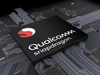

|  | CHIPSET SNAPDRAGONReview Chipset Snapdragon 821 Produsen hardware asal Amerika Serikat, Qualcomm memang identik dengan serangkaian teknologi canggih yang diusungnya. Beragam produk yang telah diciptakan Qualcomm hingga saat ini. Untuk perangkat mobile, Snapdragon merupakan produk andalan Qualcomm. Ini terbukti dengan kinerja chipset Snapdragon yang mampu mengoptimalkan performa smartphone. Hampir semua smartphone yang beredar di pasaran saat ini menggunakan chipset Snapdragon. Mulai dari smartphone low-end hingga flagship menggunakan chipset Snapdragon dengan seri yang berbeda. “Chipset Snapdragon yang digunakan smartphone di pasaran saat ini meliputi seri 800, 600, 700, 400 dan 200. Semua varian chipset tersebut mengusung teknologi handal yang dapat mendukung kinerja smartphone,” ucap Dominikus Susanto, Senior Product Marketing Manager Qualcomm Indonesia ditengah acara Snapdragon Academy 1.0, di bilangan Kuningan, Jakarta, Kamis (31/05/2018). |
|---|
 |
ASUSAsus VivoBook 14 A411UF Laptop ala Ultrabook dengan Harga Lebih Murah ASUS VivoBook 14 A411 adalah kombinasi sempurna antara keindahan dan kinerja. Tersedia dalam berbagai warna dan penyelesaian, VivoBook 14 A411 adalah laptop yang sudah di preinstall dengan Windows 10 yang didukung oleh prosesor hingga Intel® Core™ i5 generasi terbaru dengan RAM hingga 8GB dan grafis NVIDIA® GeForce® MX130. Ini adalah laptop ideal untuk komputasi dan hiburan sehari-hari. Menyetel layar HD 14 inci ke dalam ukuran bingkai yang khas dari laptop 13 inci tidaklah mudah - tetapi bingkai ultra tipis dari tampilan NanoEdge pada VivoBook 14 membuatnya mungkin. Dengan bezel 7.8mm pada layar NanoEdge, VivoBook 14 A411 memiliki rasio layar-ke-tubuh 77% yang luar biasa - sehingga Anda mendapatkan lebih banyak layar untuk tampilan yang lebih imersif. Layar HD juga dilengkapi dengan teknologi wide-view 178° untuk memastikan bahwa warna dan kontras tetap jelas dan berani, bahkan ketika dilihat pada sudut tajam. Ini adalah solusi sempurna untuk berbagi konten dengan teman dan kolega. |
|---|
VGA CardZotac GTX 1050 Ti OC 4GB DDR5 Dapat dilihat pada tabel di atas, hanya Galax GTX 1050 Ti OC dan GTX 1050 Ti OC yang datang dengan spesifikasi ter-overclock dari pabrikan. Menariknya, baik Galax GTX 1050 Ti OC dan GTX 1050 Ti OC datang dengan GPU yang Base Clock maupun Boost Clock yang sama. Keduanya memiliki Base Clock 1303 Mhz dan Boost Clock-nya mencapai 1417 MHz. Menariknya Meski memiliki Base dan Boost Clock yang sama, GTX 1050 Ti OC memiliki maksimal Boost Clock yang lebih tinggi ketimbang GTX 1050 Ti miliki Galax, yaitu berada di angka 1733 MHz berbanding dengan 1721 MHz miliki Galax. Selain kecepatan GPU, kedua brand tersebut tak mengubah setting lainnya. Tak ada peningkatan kecepatan memori maupun penambahan konektor daya eksternal pada kedua graphic card tersebut. Baik Graphics card berbasiskan GTX 1050 Ti maupun GTX 1050 (non-Ti) menyediakan konektor display yang sama dan Anda tak akan menemukan konektor display analog lagi pada kedua graphic card ini. Berikut konektor yang tersedia: 1x DVI-D (bukan DVI-I) 1x Display Port 1.3/1,4 Ready 1x HDMI 2.0b Ditujukan sebagai graphic card terjangkau, ketidakhadiran konetor display analog mungkin akan cukup disayangkan bagi para pengguna yang masih menggunakan monitor berkonektor D-Sub. Tapi yang perlu mereka lakukan hanyalah mencari adapter ke konektor yang mereka butuhkan yang bisa mereka banyak dapat temukan di pasaran dengan harga yang relatif terjangkau. |